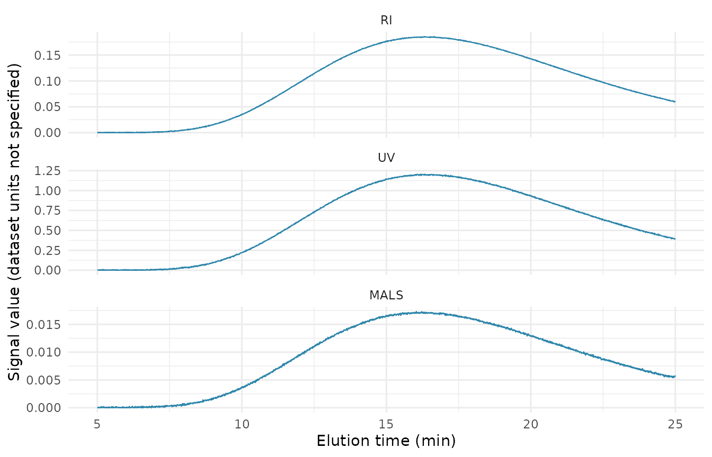

About this guide
This guide connects SEC concepts to the recipe steps and calibration
options in measure.sec. It assumes basic chemistry or
chromatography knowledge; each section can be read on its own.
How SEC data flows through measure.sec
Reading detector traces
The package examples convert detector signals to a common format,
preprocess them, apply calibration where needed, and calculate results.
The traces below come from the synthetic sec_triple_detect
dataset; their signal units are not specified by the dataset.
library(ggplot2)
library(dplyr)
#>
#> Attaching package: 'dplyr'
#> The following objects are masked from 'package:stats':
#>
#> filter, lag
#> The following objects are masked from 'package:base':
#>
#> intersect, setdiff, setequal, union
library(tidyr)
data(sec_triple_detect, package = "measure.sec")
signal_data <- sec_triple_detect |>
filter(sample_id == "PS-50K") |>
arrange(elution_time) |>
select(elution_time, ri_signal, uv_signal, mals_signal) |>
pivot_longer(
cols = c(ri_signal, uv_signal, mals_signal),
names_to = "detector",
values_to = "signal"
) |>
mutate(
detector = recode(
detector,
ri_signal = "RI",
uv_signal = "UV",
mals_signal = "MALS"
),
detector = factor(detector, levels = c("RI", "UV", "MALS"))
)
ggplot(signal_data, aes(elution_time, signal)) +
geom_line(color = "#2E86AB", linewidth = 0.4) +
facet_wrap(vars(detector), ncol = 1, scales = "free_y") +
labs(
x = "Elution time (min)",
y = "Signal value (dataset units not specified)"
) +
theme_minimal(base_size = 11)
Raw synthetic RI, UV, and MALS response columns for sample PS-50K from
sec_triple_detect. Each detector is shown in its own panel
and on its own vertical scale; the traces have not been preprocessed.
Stage 1: Input Signals
The examples convert raw detector columns to measure
format with step_measure_input_long(). Each measure stores
a location (elution time or volume) and a response value.
recipe(...) |>
step_measure_input_long(ri_signal, location = vars(elution_time), col_name = "ri") |>
step_measure_input_long(uv_signal, location = vars(elution_time), col_name = "uv")Stage 2: Preprocessing
Before calibration, signals need cleaning:
| Step | What it does | Consider it when |
|---|---|---|
step_sec_detector_delay() |
Aligns detector locations | Combining signals from detectors with different path delays |
step_sec_baseline() |
Corrects baseline shape | The trace has baseline offset or drift that the method addresses |
step_sec_ri() / step_sec_uv()
|
Applies detector response factors | The required sample-specific response factor is available |
step_sec_concentration() |
Calculates concentration from detector response | Downstream calculations require concentration in defined units |
step_sec_band_broadening() |
Applies a peak-spreading correction | The broadening model and parameters are supported by the method |
For multi-detector calculations, align detector locations before comparing responses. Baseline correction usually precedes response scaling. A scattering calculation also needs a concentration column with known units.
Stage 3: Calibration
Calibration converts elution time to molecular weight. The right approach depends on your standards and goals:
| Method | Function | Best For |
|---|---|---|
| Conventional | step_sec_conventional_cal() |
Narrow standards, same polymer type |
| Broad standard | step_sec_broad_standard() |
Single characterized reference |
| Universal | step_sec_universal_cal() |
Different polymer types |
| Single-angle scattering approximation | step_sec_mals() |
MW estimate with calibrated scattering and concentration; no Rg |
Stage 4: MW Calculation
With calibration complete, calculate molecular weight results:
| Step | Output |
|---|---|
step_sec_mw_averages() |
Mn, Mw, Mz, dispersity |
step_sec_mw_distribution() |
d(W)/d(log M) curve |
step_sec_mw_fractions() |
Cumulative fractions at MW cutoffs |
Stage 5: Export and Visualization
Extract results for reporting:
-
measure_sec_summary_table(): Summary statistics -
measure_sec_slice_table(): Point-by-point data for custom analysis -
plot_sec_*()family: Chromatograms, MWDs, calibration curves
Choose a calibration approach
Choose a calibration based on detector capability, available standards, and sample type. The tree is a starting point; the method still needs appropriate range and fit checks.
Decision guide

A starting-point guide based on detector calibration and the standards or reference data available. The scattering path describes the package’s calibrated single-angle calculation; conventional and universal paths require standards and method-specific support.
Conventional calibration
Use narrow molecular-weight standards that match the sample polymer
type. The step fits a polynomial relationship between log molecular
weight and retention from a standards data frame with
retention and log_mw columns.
step_sec_conventional_cal(
measures = "ri",
standards = standards,
fit_type = "cubic",
extrapolation = "none"
)Inspect residuals and the standards’ range before applying the fit. A difference in hydrodynamic behavior between sample and standard can bias the reported molecular weight; branching is one possible cause.
Broad-standard calibration
Use when: You have a broad reference standard with known number- and weight-average molecular weights.
The Hamielec method fits from the broad-standard chromatogram and its supplied averages. The integral method also needs a reference cumulative molecular-weight distribution.
step_sec_broad_standard(
measures = "ri",
broad_standard = reference_trace,
known_mn = reference_mn_da,
known_mw = reference_mw_da,
method = "hamielec",
fit_type = "linear",
extrapolation = "none"
)The result depends on the quality of the reference standard’s supplied averages or cumulative distribution. Check that the standard and sample are suitable for this calibration method.
Universal calibration
Use when: You have a calibration for one polymer
type and reliable Mark-Houwink parameters for both the standard and
sample polymers. Universal calibration relates retention to hydrodynamic
volume, [η] × M.
step_sec_universal_cal(
measures = "ri",
calibration = standard_calibration,
K_sample = sample_k,
a_sample = sample_a,
K_standard = standard_k,
a_standard = standard_a
)Use parameters measured or sourced for the solvent and temperature of the method.
The current step uses Mark-Houwink parameters for both polymer types. Their solvent, temperature, and molecular-weight range must match the method; parameter applicability should be reviewed for the sample.
Light-scattering calibration
The current step_sec_mals() calculates a calibrated
single-angle molecular-weight estimate. It needs a concentration column
with known units, a suitable dn/dc value, and a detector calibration
constant. The step accepts exactly one angle; it does not fit angular
dependence or calculate radius of gyration.
step_sec_mals(
mals_col = "mals",
concentration_col = "concentration",
concentration_unit = "mg/mL",
dn_dc_column = "dn_dc",
angles = 90,
calibration_constant = instrument_calibration_constant
)The column names and calibration value must match the data and detector method. Without a calibration constant, the output is relative and uncalibrated.
Understand detector signals
Each detector type provides different information. Knowing what each measures helps you interpret results and troubleshoot problems.
Concentration detectors
These responses can be related to concentration when the required detector response factor is known.
Refractive index (RI)
What it measures: Change in refractive index proportional to concentration.
Key parameter: dn/dc (refractive index increment, mL/g)
step_sec_ri(dn_dc_column = "dn_dc")RI response depends on the sample’s dn/dc and solvent conditions. Use a response factor appropriate to the method and sample.
UV detector
What it measures: Absorbance at specific wavelength(s).
Key parameter: Extinction coefficient (ε, mL/(g·cm))
step_sec_uv(extinction_column = "extinction_coef", wavelength = 280)UV response depends on absorbance at the selected wavelength and the sample’s chromophores. Choose wavelengths and response factors for the material being measured.
Diode-array detector (DAD)
What it measures: Full UV-Vis spectrum at each point.
step_sec_dad(wavelengths = c(254, 280, 320))When to use: Complex samples where spectral information helps identify components. Copolymer composition with wavelength-dependent absorption.
Light-scattering detectors
Light scattering relates detector response to molecular weight when combined with concentration, dn/dc, and detector calibration. The package step currently calculates a single-angle estimate.
Multi-Angle Light Scattering (MALS)
What it measures: Scattered light intensity at multiple angles.
The current step requires a concentration column in known units, dn/dc, and a detector calibration constant for a calibrated estimate. It accepts one angle and does not estimate radius of gyration (Rg).
step_sec_mals(
mals_col = "mals",
concentration_col = "concentration",
concentration_unit = "mg/mL",
dn_dc_column = "dn_dc",
angles = 90,
calibration_constant = instrument_calibration_constant
)Supply detector and concentration fields from the method. This step does not calculate Rg or branching indices.
See also: MALS Detection vignette
Low-Angle Light Scattering (LALS)
What it measures: Scattered light near 0° angle.
Add this step to a recipe with aligned detector and concentration
columns. dn_dc is one numeric value in mL/g for the recipe;
0.185 below is an illustrative setting. Choose it for the sample,
solvent and method.
step_sec_lals(
measures = "lals",
concentration_col = "concentration",
concentration_unit = "mg/mL",
dn_dc = 0.185,
calibration_constant = lals_calibration_constant
)Supply the detector’s calibration constant for a calibrated mass estimate. Without it, the step returns a relative estimate.
Right-Angle Light Scattering (RALS)
What it measures: Scattered light at 90°.
Use the same concentration and dn/dc declarations, with the calibration constant for the right-angle detector:
step_sec_rals(
measures = "rals",
concentration_col = "concentration",
concentration_unit = "mg/mL",
dn_dc = 0.185,
calibration_constant = rals_calibration_constant
)The single-angle interpretation still needs to suit the sample and method.
See also: LALS/RALS Detection vignette
Hydrodynamic detectors
Viscosity and diffusion measurements provide information about molecular behavior in solution. Their interpretation depends on the sample, solvent, and measurement conditions.
Viscometer
What it measures: Differential pressure across a capillary, related to solution viscosity.
Provides: Intrinsic viscosity [η] when combined with concentration.
recipe(...) |>
step_sec_viscometer(dp_col = "dp", ip_col = "ip") |>
step_sec_intrinsic_visc(
specific_visc_col = "specific_visc",
concentration_col = "concentration",
concentration_unit = "mg/mL"
)| Best for | Limitations |
|---|---|
| Universal calibration | Requires concentration data |
| Branching characterization | Sensitive to bubbles |
| Mark-Houwink parameters | Additional complexity |
Common pitfalls
This section addresses problems you’re likely to encounter and how
measure.sec helps you fix them.
Baseline Issues
Symptoms: Sloped baseline, wavy baseline, or baseline that doesn’t return to zero.
Causes: Temperature drift (RI), mobile phase mixing, column equilibration, late-eluting contaminants.
Solution: Use step_sec_baseline() with
an appropriate method:
step_sec_baseline(
measures = "ri",
method = "spline" # Smooth spline between baseline regions
)Supported methods are "linear", "median",
"spline", and "rf":
- linear: Interpolates between the means of the two baseline regions.
- median: Uses their medians, which are less sensitive to outliers.
- spline: Fits a smooth spline between baseline regions.
- rf: Uses robust local regression for curved or drifting baselines.
Inter-Detector Delay
Symptoms: Detector traces appear offset along the elution axis, which can affect calculations that combine signals.
Cause: Detectors in series can have different path volumes. The correction depends on the delay measured for the detector path and reference used by the method; the package example traces do not establish those values.
Solution: Use step_sec_detector_delay()
before any MW calculations:
step_sec_detector_delay(
reference = "ri",
delay_times = c(uv = uv_delay_min, mals = mals_delay_min),
elution_units = "min"
)For a time-based elution axis, pass measured offsets in minutes with
delay_times. For volume-based offsets, pass
delay_volumes in mL and set flow_rate in
mL/min. The delay arguments keep these units regardless of
elution_units.
Example measurement outline:
- Inject a method-appropriate reference.
- Record the reference response location for each detector.
- Express the measured offsets as minutes for
delay_timesor millilitres fordelay_volumes.
Band Broadening
Symptoms: MWD appears broader than expected. High MW tail or low MW shoulder.
Cause: Peak spreading from extra-column volume, column dispersion, or injection effects.
Solution: Use
step_sec_band_broadening() only when the method supports
its peak-spreading model and parameter. Express sigma in
the same unit as the trace location.
step_sec_band_broadening(
measures = "ri",
sigma = measured_sigma
)Estimate sigma from a suitable narrow standard using a
documented procedure. The standard’s own distribution and other sources
of broadening also affect its observed peak.
Out-of-Range Calibration
Symptoms: Extrapolated MW values seem unreasonable. Very high or very low MW fractions.
Cause: Sample contains material outside the MW range of your calibration standards.
Solution: Options in
step_sec_conventional_cal():
step_sec_conventional_cal(
measures = "ri",
standards = standards,
extrapolation = "linear" # or "none" to return NA outside the range
)Use standards that span the range of interest. If the method uses extrapolation, identify and review the extrapolated locations separately.
Noisy Light Scattering
Symptoms: Jagged LS signal, especially at low concentration regions.
Causes: Dust, bubbles, low sample concentration, detector noise.
Solutions:
- Check for bubbles, particulates, and instrument status using the method’s procedures.
- Review concentration and dn/dc inputs.
- Apply smoothing only when it is specified and justified by the method.
- Inspect the signal region used for the calculation and report any exclusions.
Interpret results
Molecular-weight averages
SEC produces multiple MW averages. Each tells you something different:
| Average | Formula | What It Emphasizes |
|---|---|---|
| Mn | Σ(niMi) / Σni | Number of chains—sensitive to low MW |
| Mw | Σ(niMi2) / Σ(niMi) | Mass of chains—sensitive to high MW |
| Mz | Σ(niMi3) / Σ(niMi2) | Very sensitive to high MW tail |
Practical interpretation:
- Mn tells you about the most numerous species
- Mw tells you where most of the mass is
- Mz warns about high MW contamination or aggregation
Dispersity (Đ)
Dispersity = Mw/Mn measures the breadth of the distribution.
Dispersity is at least 1 for a positive molecular-weight distribution. Values close to 1 indicate a narrower distribution; larger values indicate a broader distribution. Interpretation depends on the sample and the integration and calibration used. A result below 1 is a reason to inspect the signal, units, calibration, and calculation support.
When results look unexpected
MW seems too high or too low:
- Check calibration: Are standards correctly identified?
- Check detector delays: Misalignment shifts apparent MW
- Check dn/dc: Wrong value directly scales MW from LS
Dispersity seems too narrow:
- Check integration limits: Too narrow excludes real distribution
- Check band broadening: Unaccounted broadening inflates apparent width
- Sample may genuinely be narrow
MW varies between injections:
- Check baseline reproducibility
- Check column equilibration
- Check sample stability (aggregation, degradation)
Negative detector response:
- Low-signal detector response can be negative after baseline correction.
- Treat negative molecular-weight output as invalid or unsupported; inspect the signal, normalization, and calibration inputs.
See also
- Getting Started - Your first SEC analysis
- Comprehensive SEC Analysis - Full reference for all features
- Multi-Detector SEC - Detailed multi-detector workflows
- Calibration Management - Saving and reusing calibrations